अध्याय 11: भारत के विदेश संबंध
(India's External Relations) - भाग 1: ऐतिहासिक संदर्भ
प्रिय विद्यार्थियों,
भारत की आजादी एक ऐसे समय में हुई जब पूरी दुनिया दो गुटों—अमेरिका और सोवियत संघ—में बंटी हुई थी। इसे
'शीत युद्ध'
(Cold War) का दौर कहा जाता है।
आजाद भारत के सामने सबसे बड़ी चुनौती यह थी कि वह अपनी विदेश नीति को कैसे स्वतंत्र रखे ताकि वह फिर से किसी का गुलाम न बने।
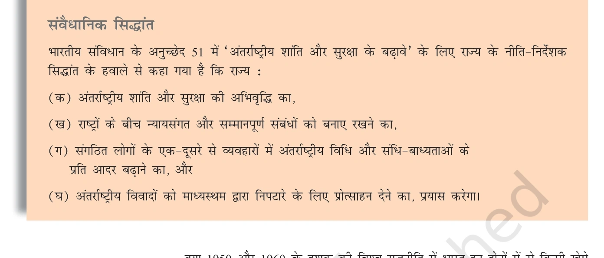
संवैधानिक सिद्धांत: अनुच्छेद 51
विवरण:
भारतीय संविधान के
अनुच्छेद 51
में राज्य के नीति-निर्देशक सिद्धांतों (DPSP) के तहत अंतर्राष्ट्रीय शांति और सुरक्षा की अभिवृद्धि के प्रावधान दिए गए हैं।
प्रमुख 4 बिंदु (Article 51 Provisions):
• (क) अंतर्राष्ट्रीय शांति और सुरक्षा की अभिवृद्धि करना।
• (ख) राष्ट्रों के बीच न्यायसंगत और सम्मानपूर्ण संबंधों को बनाए रखना।
• (ग) अंतर्राष्ट्रीय विधि और संधि-बाध्यताओं के प्रति आदर बढ़ाना।
• (घ) अंतर्राष्ट्रीय विवादों को मध्यस्थता द्वारा निपटाने के लिए प्रोत्साहन देना।
भारत के पहले प्रधानमंत्री
जवाहरलाल नेहरू
ने खुद ही विदेश मंत्री के रूप में देश की विदेश नीति की नींव रखी। उनके तीन मुख्य उद्देश्य थे:
-
1. कठिन संघर्ष से प्राप्त संप्रभुता (Sovereignty) को बचाना:
किसी बाहरी शक्ति का दबाव न मानना।
-
2. क्षेत्रीय अखंडता (Territorial Integrity) को बनाए रखना:
सीमाओं की सुरक्षा सुनिश्चित करना।
-
3. तीव्र आर्थिक विकास:
विदेश नीति ऐसी हो जो देश के विकास में मदद करे।
जवाहरलाल नेहरू (1889 - 1964)
•
उपाधि:
स्वतंत्र भारत के पहले प्रधानमंत्री और विदेश मंत्री।
•
विदेश नीति के शिल्पी:
इन्होंने 1947 से 1964 तक भारत की विदेश नीति का नेतृत्व स्वयं किया।
•
मूल तीन उद्देश्य:
(1) कठिन संघर्ष से प्राप्त संप्रभुता को बचाए रखना, (2) देश की क्षेत्रीय अखंडता को सुरक्षित रखना, और (3) योजनाबद्ध तरीके से तीव्र आर्थिक विकास करना।
•
दृष्टिकोण:
ये साम्राज्यवाद, उपनिवेशवाद और जातिवाद के कट्टर विरोधी थे और गुटनिरपेक्ष आंदोलन के पांच प्रमुख संस्थापकों में से एक थे।
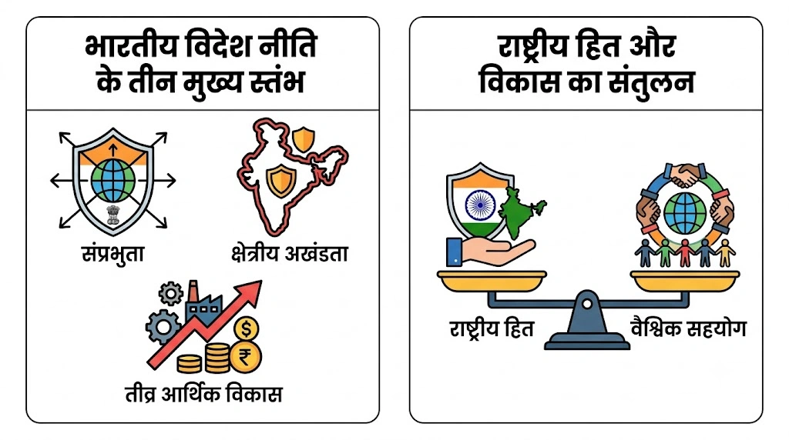
भारतीय विदेश नीति के मुख्य स्तंभ:
विवरण:
भारतीय विदेश नीति के तीन मुख्य स्तंभों—संप्रभुता की रक्षा, सीमा सुरक्षा (अखंडता) और तीव्र आर्थिक विकास—के बीच संतुलन को प्रदर्शित करता है।
नेहरू चाहते थे कि एशिया और अफ्रीका के देश जो अभी-अभी आजाद हुए हैं, वे एकजुट हों। इसी उद्देश्य से
1955 में बांडुंग सम्मेलन
(Bandung Conference) हुआ।
-
बांडुंग सम्मेलन:
इस सम्मेलन ने 'गुटनिरपेक्ष आंदोलन' (NAM) की नींव रखी।
-
एशियाई संबंध सम्मेलन (1947):
आजादी से पहले ही नेहरू ने एशियाई एकता के लिए कोशिशें शुरू कर दी थीं।
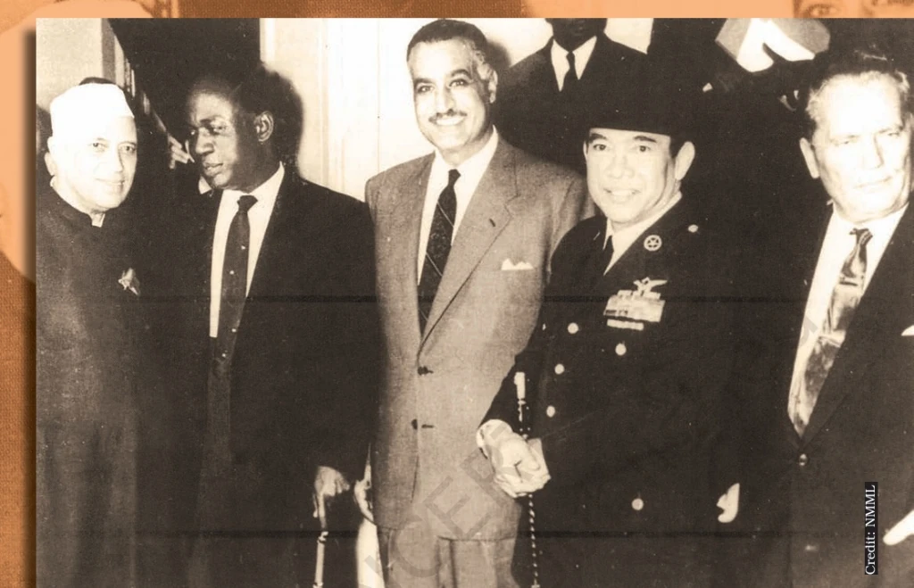
ऐतिहासिक चित्र: बांडुंग सम्मेलन (1955)
विवरण:
इंडोनेशिया के शहर बांडुंग में आयोजित ऐतिहासिक एशियाई-अफ़्रीकी सम्मेलन में भाग लेते हुए भारतीय प्रधानमंत्री जवाहरलाल नेहरू, मिस्र के राष्ट्रपति गमाल अब्देल नासिर और अन्य राष्ट्राध्यक्ष।
बोर्ड परीक्षा विशेष प्रश्नोत्तर (CBSE Board Q&A):
•
प्रश्न 1: बांडुंग सम्मेलन कब हुआ था और इसका क्या ऐतिहासिक महत्त्व है?
•
उत्तर:
बांडुंग सम्मेलन
अप्रैल 1955
में इंडोनेशिया में हुआ था। यह सम्मेलन नव-स्वतंत्र एशियाई और अफ़्रीकी देशों के बीच आपसी सहयोग और उपनिवेशवाद के विरोध का सबसे बड़ा मंच था। इसी सम्मेलन में
गुटनिरपेक्ष आंदोलन (NAM)
की औपचारिक नींव पड़ी थी।
•
प्रश्न 2: एशियाई संबंध सम्मेलन (Asian Relations Conference) कब हुआ था?
•
उत्तर:
भारत की आजादी से पांच महीने पहले,
मार्च 1947
में नई दिल्ली में जवाहरलाल नेहरू के नेतृत्व में एशियाई संबंध सम्मेलन आयोजित किया गया था, जो एशियाई एकता का शुरुआती प्रयास था।
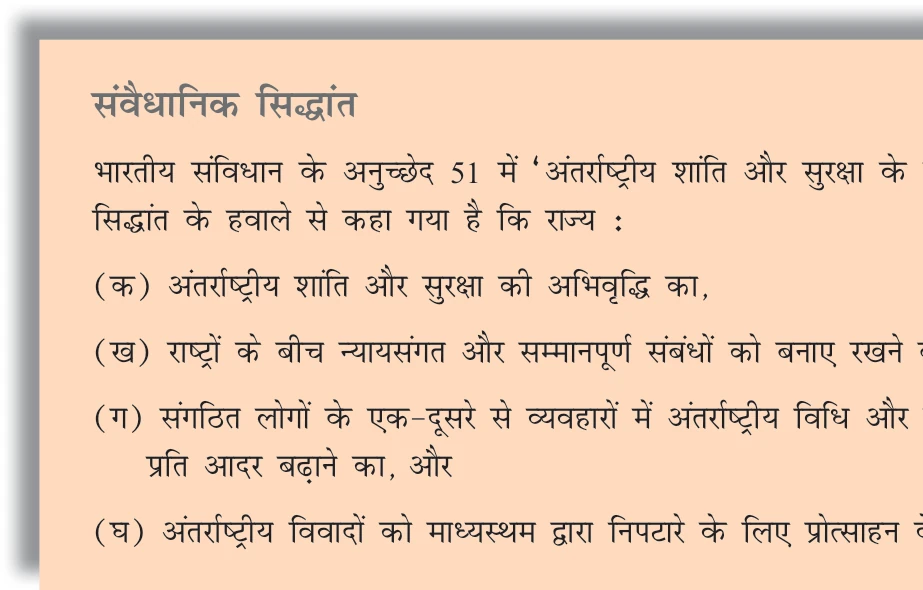
ऐतिहासिक कार्टून विजुअल
विवरण:
इस प्रसिद्ध कार्टून में प्रधानमंत्री जवाहरलाल नेहरू को अमेरिका (USA) और सोवियत संघ (USSR) नामक दो बड़ी महाशक्तियों के बीच एक तंग रस्सी पर संतुलन बनाते हुए दिखाया गया है, जबकि उनके सहयोगी उन्हें घबराहट से देख रहे हैं।
बोर्ड परीक्षा विशेष कार्टून आधारित प्रश्नोत्तर (CBSE Board Q&A):
•
प्रश्न 1: यह कार्टून भारत की विदेश नीति की किस प्रमुख रणनीति को दर्शाता है?
•
उत्तर:
यह कार्टून भारत की
गुटनिरपेक्षता की नीति (Policy of Non-Alignment)
को दर्शाता है, जिसमें भारत दोनों महाशक्तियों के सैन्य गुटों से अलग रहकर अपनी स्वतंत्र नीति और दोनों पक्षों से अच्छे संबंध संतुलित रखने का प्रयास कर रहा था।
•
प्रश्न 2: आलोचक इस संतुलन बनाने की नीति को 'सिद्धांतहीन' क्यों कहते थे?
•
उत्तर:
आलोचकों का तर्क था कि भारत का संतुलन हमेशा एक समान नहीं रहता था। उदाहरण के लिए, जब 1956 में सोवियत संघ ने हंगरी पर हमला किया, तो भारत ने इसकी सार्वजनिक आलोचना नहीं की, जबकि पश्चिमी देशों के हमलों (जैसे स्वेज नहर संकट) पर भारत बहुत मुखर था।
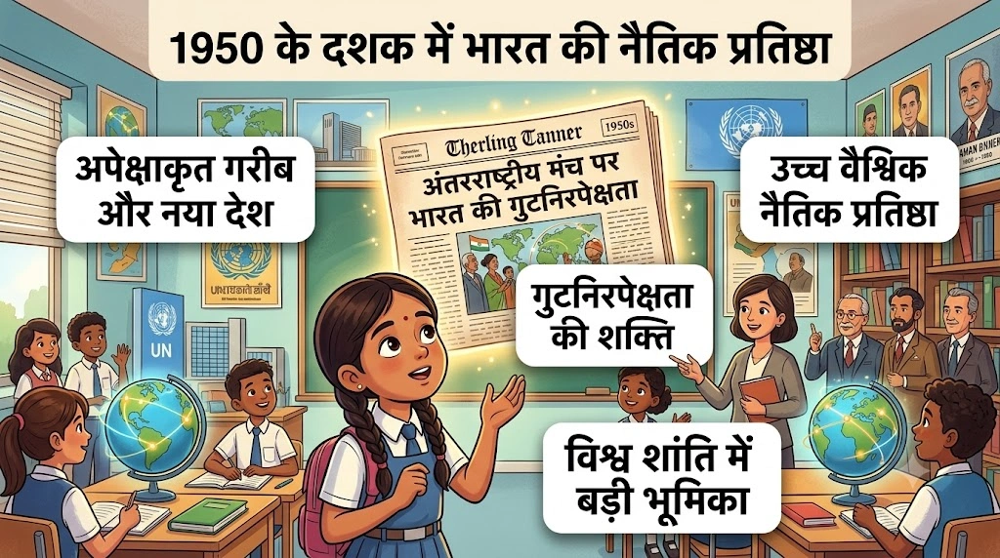
विदेश नीति कूटनीतिक विश्लेषण (Page 58 कार्टून)
विवरण:
इस कार्टून में एक बालिका सवाल पूछती है:
"हम लोग आज की बनिस्बत जब ज्यादा गरीब, कमज़ोर और नए थे तो शायद दुनिया में हमारी पहचान कहीं ज्यादा थी। है ना विचित्र बात?"
बोर्ड परीक्षा विशेष कार्टून आधारित प्रश्नोत्तर (CBSE Board Q&A):
•
प्रश्न 1: यह कार्टून 1950 के दशक में भारत की नैतिक छवि को किस प्रकार रेखांकित करता है?
•
उत्तर:
1950 के दशक में भारत भले ही आर्थिक और सैन्य रूप से नया और गरीब देश था, लेकिन पंडित नेहरू के गुटनिरपेक्ष आंदोलन और शांतिपूर्ण कूटनीति के कारण अंतरराष्ट्रीय राजनीति में भारत का नैतिक कद और दबदबा अत्यंत ऊँचा था।
संप्रभुता (Sovereignty):
किसी देश की वह सर्वोच्च शक्ति जो उसे अपने मामलों में स्वतंत्र रूप से निर्णय लेने का अधिकार देती है।
जब पूरी दुनिया दो महाशक्तियों—अमेरिका और सोवियत संघ—के बीच बंटी हुई थी, तब भारत ने एक साहसिक फैसला लिया। भारत ने किसी भी गुट में शामिल होने से मना कर दिया और एक स्वतंत्र रास्ता चुना।
गुटनिरपेक्षता का मतलब यह नहीं है कि भारत दुनिया की समस्याओं से दूर रहेगा। इसका अर्थ है कि भारत सैन्य गुटबाजी से अलग रहकर हर मुद्दे पर अपनी स्वतंत्र राय रखेगा।
-
मुख्य संस्थापक:
जवाहरलाल नेहरू (भारत), नासिर (मिस्र), और टीटो (युगोस्लाविया)।
-
पहला सम्मेलन:
बेलग्रेड (युगोस्लाविया) में 1961 में।
-
उद्देश्य:
नव-स्वतंत्र देशों की आजादी को बचाना और विश्व शांति के लिए काम करना।
भारत ने इस नीति को क्यों अपनाया? इसके प्रमुख कारण निम्नलिखित थे:
-
1. राष्ट्रीय संप्रभुता और स्वतंत्र निर्णय:
भारत किसी भी महाशक्ति के दबाव में आए बिना वैश्विक मंच पर अपने फैसले देशहित में स्वतंत्र रूप से ले सकता था।
-
2. संतुलित आर्थिक व तकनीकी सहायता:
भारत दोनों महाशक्ति गुटों (अमेरिका और सोवियत संघ) से अपनी विकासात्मक आवश्यकताओं के अनुसार ऋण, तकनीक और खाद्य सहायता ले सकता था।
-
3. वैश्विक मध्यस्थता और शांति स्थापना:
भारत ने कोरियाई युद्ध (1950-53) और स्वेज नहर संकट (1956) में दोनों गुटों के बीच मध्यस्थता (Mediation) कर विश्व शांति को बनाए रखने में बड़ी भूमिका निभाई।
-
4. अंतरराष्ट्रीय स्तर पर नेतृत्व और प्रतिष्ठा:
नव-स्वतंत्र देशों (तीसरी दुनिया - Third World) को एक संगठित मंच प्रदान कर भारत अंतरराष्ट्रीय राजनीति में एक महत्वपूर्ण ताकत बनकर उभरा।
-
5. राष्ट्रीय सुरक्षा का संतुलन:
एक गुट में शामिल होने से दूसरा गुट भारत का शत्रु बन जाता। गुटनिरपेक्ष रहकर भारत ने अपने सुरक्षा हितों को दोनों पक्षों से सुरक्षित रखा।
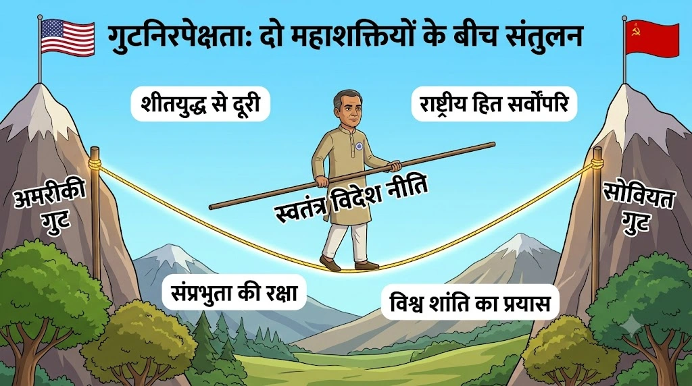
गुटनिरपेक्षता के मूल सिद्धांत:
विवरण:
गुटनिरपेक्षता के दो मूल आयामों—स्वतंत्र वैश्विक निर्णय मार्ग और शांतिपूर्ण अंतरराष्ट्रीय सहयोग—को रेखांकित करता है।
आलोचकों का तर्क था कि भारत की नीति 'सिद्धांतहीन' (Unprincipled) थी। 1971 में सोवियत संघ के साथ की गई
'मैत्री संधि'
(Friendship Treaty) को लेकर कुछ लोगों ने कहा कि भारत गुटनिरपेक्षता से हटकर रूस के करीब चला गया है। लेकिन भारत का कहना था कि यह केवल अपनी सुरक्षा के लिए था।
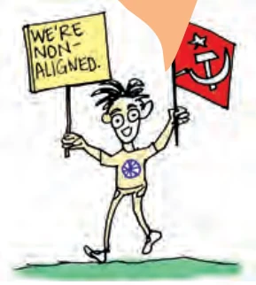
ऐतिहासिक कार्टून: भारत-सोवियत मैत्री संधि (1971)
विवरण:
इस व्यंग्यात्मक कार्टून में भारतीय विदेश नीति को एक हाथ में "WE'RE NON-ALIGNED" (हम गुटनिरपेक्ष हैं) की तख्ती पकड़े हुए दिखाया गया है, जबकि पीठ के पीछे दूसरे हाथ में सोवियत संघ (USSR) का झंडा छिपा रखा है। यह भारत-सोवियत 1971 मैत्री संधि पर बाहरी दुनिया की आलोचना को दर्शाता है।
बोर्ड परीक्षा विशेष कार्टून आधारित प्रश्नोत्तर (CBSE Board Q&A):
•
प्रश्न 1: यह कार्टून किस ऐतिहासिक समझौते की आलोचना करता है?
•
उत्तर:
यह कार्टून अगस्त 1971 में भारत और सोवियत संघ के बीच हस्ताक्षरित
20-वर्षीय शांति, मैत्री और सहयोग संधि (Treaty of Peace, Friendship and Cooperation)
की आलोचना करता है।
•
प्रश्न 2: आलोचक इस संधि को गुटनिरपेक्षता की नीति के खिलाफ क्यों मानते थे?
•
उत्तर:
आलोचकों का मानना था कि इस संधि पर हस्ताक्षर करके भारत अनौपचारिक रूप से सोवियत संघ के सैन्य और राजनीतिक गुट में शामिल हो गया है, जिससे उसकी निष्पक्ष गुटनिरपेक्षता की छवि समाप्त हो गई है।
•
प्रश्न 3: इस संधि पर भारत सरकार का क्या रुख था?
•
उत्तर:
भारत सरकार का तर्क था कि यह कोई सैन्य गठबंधन नहीं था। 1971 के बांग्लादेश संकट और पाकिस्तान-अमेरिका-चीन के आपसी गठजोड़ के कारण भारत को अपनी सुरक्षा और सैन्य सहायता सुनिश्चित करने के लिए सोवियत संघ के कूटनीतिक समर्थन की सख्त जरूरत थी।
गुटनिरपेक्षता केवल एक नीति नहीं थी, बल्कि यह
'आत्मसम्मान'
का प्रतीक थी। आज भले ही शीत युद्ध खत्म हो गया हो, लेकिन स्वतंत्र विदेश नीति की जरूरत आज भी उतनी ही है।
भारत और चीन दो बड़े एशियाई पड़ोसी हैं। नेहरु चाहते थे कि भारत और चीन मिलकर एशिया का भविष्य तय करें, लेकिन इतिहास ने एक अलग ही रास्ता चुन रखा था।
नेहरू और चीन के प्रधानमंत्री
चाऊ एन-लाई
(Zhou Enlai) ने शांति के पाँच सिद्धांतों पर आधारित 'पंचशील' समझौता किया।
-
हिंदी-चीनी भाई-भाई:
उस समय यह नारा बहुत लोकप्रिय हुआ था। भारत ने चीन के साथ दोस्ती की हर संभव कोशिश की।
-
पाँच सिद्धांत:
(i) संप्रभुता का सम्मान, (ii) अनाक्रमण, (iii) आंतरिक मामलों में अहस्तक्षेप, (iv) समानता, (v) शांतिपूर्ण सह-अस्तित्व।
ऐतिहासिक विजुअल विश्लेषण: पंचशील समझौता (1954)
विवरण:
29 अप्रैल 1954 को भारतीय प्रधानमंत्री जवाहरलाल नेहरू और चीनी प्रधानमंत्री चाऊ एन-लाई के बीच हस्ताक्षरित ऐतिहासिक 'पंचशील समझौते' के पांचों शांतिपूर्ण स्तंभों को प्रदर्शित करता है:
• 1.
क्षेत्रीय अखंडता और संप्रभुता का सम्मान
• 2.
आपसी अनाक्रमण (Non-aggression)
• 3.
एक-दूसरे के आंतरिक मामलों में गैर-हस्तक्षेप
• 4.
समानता और परस्पर लाभ
• 5.
शांतिपूर्ण सह-अस्तित्व (Peaceful Co-existence)
बोर्ड परीक्षा विशेष प्रश्नोत्तर (CBSE Board Q&A):
•
प्रश्न 1: पंचशील समझौते पर किन नेताओं ने और कब हस्ताक्षर किए थे?
•
उत्तर:
इस समझौते पर भारत के प्रधानमंत्री जवाहरलाल नेहरू और चीन के प्रधानमंत्री चाऊ एन-लाई ने
29 अप्रैल 1954
को हस्ताक्षर किए थे।
•
प्रश्न 2: पंचशील समझौते का मुख्य उद्देश्य क्या था?
•
उत्तर:
इसका मुख्य उद्देश्य दोनों पड़ोसी देशों के बीच शांतिपूर्ण सह-अस्तित्व, क्षेत्रीय अखंडता का सम्मान और अनाक्रमण की नीति अपनाकर आपसी संबंधों को मजबूत करना था।
चीन ने तिब्बत पर कब्जा कर लिया और वहां दमन शुरू किया। 1959 में तिब्बती आध्यात्मिक गुरु
दलाई लामा
ने भारत में शरण मांगी। भारत ने उन्हें शरण दी, जिसे चीन ने अपने आंतरिक मामलों में 'दखल' माना। यहीं से भारत और चीन के बीच दरार पैदा हुई।
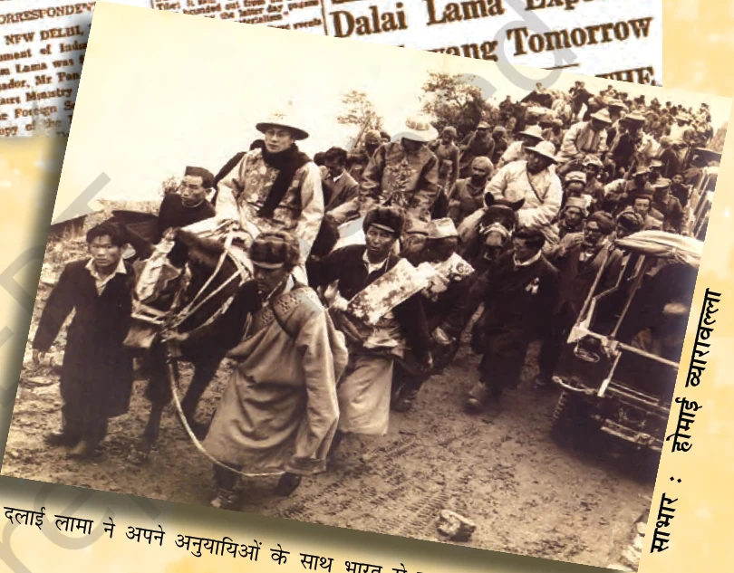
ऐतिहासिक चित्र: दलाई लामा का भारत आगमन (1959)
विवरण:
तिब्बत पर चीनी सेना के कब्जे और सांस्कृतिक दमन के बाद अपने अनुयायियों के साथ सीमा पार कर भारत में प्रवेश करते हुए तिब्बती धर्मगुरु दलाई लामा।
बोर्ड परीक्षा विशेष प्रश्नोत्तर (CBSE Board Q&A):
•
प्रश्न 1: दलाई लामा ने भारत से राजनीतिक शरण कब मांगी और भारत सरकार का क्या निर्णय था?
•
उत्तर:
दलाई लामा ने
1959
में भारत से राजनीतिक शरण मांगी। भारत सरकार ने मानवीय आधार पर उन्हें और उनके हजारों अनुयायियों को शरण प्रदान की और वे धर्मशाला (हिमाचल प्रदेश) में बस गए।
•
प्रश्न 2: तिब्बत मुद्दे को लेकर चीन ने भारत पर क्या आरोप लगाया?
•
उत्तर:
चीन ने आरोप लगाया कि दलाई लामा को शरण देकर भारत चीन विरोधी गतिविधियों को बढ़ावा दे रहा है और 1954 के पंचशील समझौते (आंतरिक मामलों में अहस्तक्षेप) का उल्लंघन कर रहा है।
चीन ने अचानक अक्टूबर 1962 में भारत पर आक्रमण कर दिया। भारत दो मोर्चों पर संकट में था—पहला
अरुणाचल प्रदेश
(नेफ़ा - NEFA) और दूसरा
लद्दाख
(अक्साई चिन)।
-
परिणाम:
भारतीय सेना इस हमले के लिए तैयार नहीं थी। चीन ने बहुत सा इलाका कब्जा लिया और अचानक युद्ध विराम की घोषणा कर दी।
-
धक्का:
इस हार ने भारत की छवि को वैश्विक स्तर पर धक्का पहुँचाया और नेहरू की विदेश नीति की बहुत आलोचना हुई।
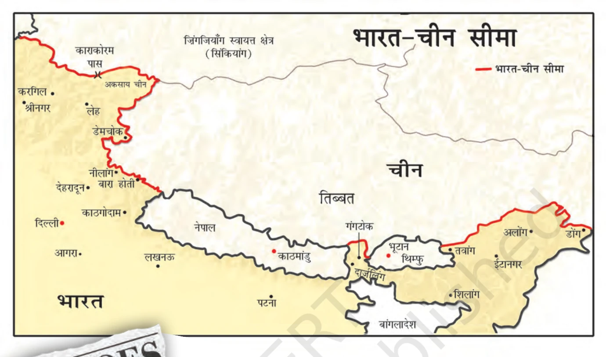
मानचित्र विश्लेषण: भारत-चीन सीमा विवाद
विवरण:
भारत और चीन के बीच विवादित सीमा क्षेत्रों को दर्शाता मानचित्र। इसमें मुख्य रूप से पश्चिमी क्षेत्र (अक्साई चिन) और पूर्वी क्षेत्र (अरुणाचल प्रदेश/नेफा) के विवादित हिस्सों को दर्शाया गया है।
बोर्ड परीक्षा विशेष प्रश्नोत्तर (CBSE Board Q&A):
•
प्रश्न 1: 1962 के युद्ध में चीन ने भारत के किन दो प्रमुख क्षेत्रों पर हमला किया था?
•
उत्तर:
चीन ने भारत के दो क्षेत्रों पर हमला किया: (1)
पश्चिमी क्षेत्र (लद्दाख का अक्साई चिन)
, और (2)
पूर्वी क्षेत्र (अरुणाचल प्रदेश, जिसे तब नेफ़ा - NEFA - उत्तर-पूर्वी सीमांत एजेंसी कहा जाता था)
।
•
प्रश्न 2: मैकमोहन रेखा (McMahon Line) क्या है और विवाद में इसकी क्या भूमिका है?
•
उत्तर:
मैकमोहन रेखा ब्रिटिश शासन के दौरान 1914 में शिमला समझौते के तहत तय की गई भारत और तिब्बत की सीमा रेखा है। चीन इस रेखा को औपनिवेशिक काल का समझौता मानकर स्वीकार नहीं करता है और अरुणाचल प्रदेश के बड़े हिस्से पर अपना दावा जताता है।
ऐतिहासिक कार्टून: सीमा पर चीनी घुसपैठ (शंकर का कार्टून)
विवरण:
इस व्यंग्यात्मक कार्टून में प्रधानमंत्री नेहरू को एक रस्सी (फांस) लेकर सीमा पार करने वाले चीनी सैनिक को पकड़ने का प्रयास करते दिखाया गया है, जो चीनी घुसपैठ पर भारतीय विदेश नीति के प्रतिक्रियात्मक रवैये को दर्शाता है।
बोर्ड परीक्षा विशेष कार्टून आधारित प्रश्नोत्तर (CBSE Board Q&A):
•
प्रश्न 1: यह कार्टून 1962 के युद्ध से पहले सीमा पर किस स्थिति को दर्शाता है?
•
उत्तर:
यह कार्टून 1950 के दशक के उत्तरार्ध में चीनी घुसपैठ की घटनाओं और भारत सरकार द्वारा कूटनीतिक रूप से उन्हें रोकने के असफल और ढीले प्रयासों को दर्शाता है। नेहरू का मानना था कि बातचीत से विवाद सुलझ जाएगा और चीन कभी बड़ा हमला नहीं करेगा।
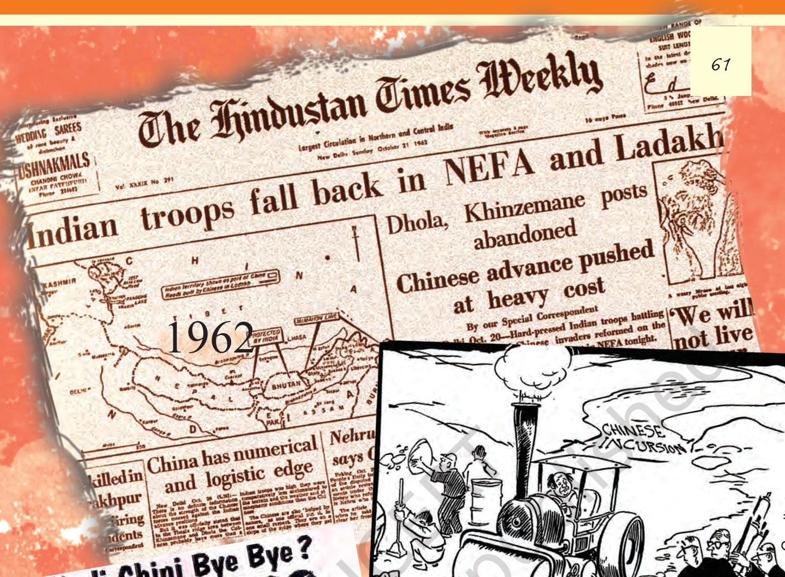
ऐतिहासिक समाचार कतरन: 1962 भारत-चीन युद्ध
विवरण:
1962 के भारत-चीन युद्ध के समय के समाचार पत्रों की कतरनें और एक कार्टून जिसमें चीनी हमले के कारण नेहरू सरकार पर संसद और जनता के दबाव को दर्शाया गया है।
बोर्ड परीक्षा विशेष प्रश्नोत्तर (CBSE Board Q&A):
•
प्रश्न 1: 1962 के युद्ध के क्या राजनीतिक परिणाम हुए?
•
उत्तर:
(1) रक्षा मंत्री वी.के. कृष्ण मेनन को इस्तीफा देना पड़ा। (2) नेहरू जी के नेतृत्व को गहरा धक्का लगा। (3) पहली बार संसद में कांग्रेस सरकार के खिलाफ
अविश्वास प्रस्ताव (No-Confidence Motion)
लाया गया। (4) कम्युनिस्ट पार्टी (CPI) में दरार पड़ गई और सोवियत समर्थक और चीन समर्थक धड़े अलग हो गए (CPI-M का गठन)।
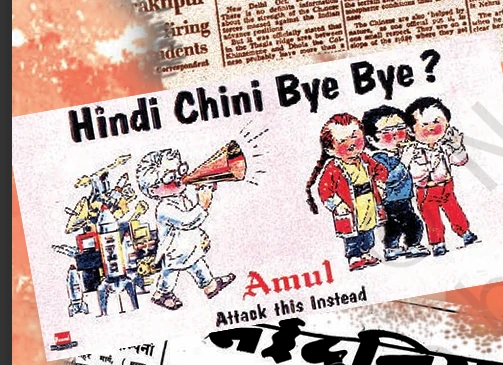
ऐतिहासिक विज्ञापन कार्टून: अमूल 'Hindi Chini Bye Bye?' (1962)
विवरण:
1962 के भारत-चीन युद्ध के दौरान जारी किया गया अमूल (Amul) का एक प्रसिद्ध विज्ञापन कार्टून। इसमें ऊपर "Hindi Chini Bye Bye?" लिखा है, और नीचे "Attack this Instead" (इस पर आक्रमण करने की बजाय इस पर टूट पड़ो) लिखकर मक्खन के पैकेट को दिखाया गया है, जो युद्धकालीन परिस्थितियों पर एक व्यंग्यपूर्ण प्रतिक्रिया है।
बोर्ड परीक्षा विशेष कार्टून आधारित प्रश्नोत्तर (CBSE Board Q&A):
•
प्रश्न 1: यह विज्ञापन किस ऐतिहासिक घटना और नारे पर व्यंग्य करता है?
•
उत्तर:
यह विज्ञापन 1950 के दशक के प्रसिद्ध भाईचारे के नारे
"हिंदी-चीनी भाई-भाई"
पर व्यंग्य करता है, जो 1962 के चीन के आक्रमण और विश्वासघात के बाद
"हिंदी-चीनी बाय-बाय"
(सदा के लिए दूरी) में बदल गया।
•
प्रश्न 2: "Attack this Instead" का कार्टूनिस्ट ने यहाँ क्या संदेश देने का प्रयास किया है?
•
उत्तर:
इसका संदेश है कि युद्ध की विनाशकारी सैन्य हिंसा ("Attack") के स्थान पर लोगों को शांतिपूर्ण और स्वास्थ्यवर्धक खाद्य उत्पादों (जैसे मक्खन) की ओर ध्यान देना चाहिए। यह युद्धकालीन तनाव के समय जनता का मनोबल बढ़ाने और शांतिप्रियता को बढ़ावा देने का एक रचनात्मक तरीका था।
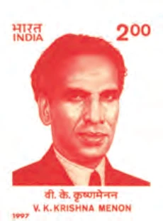
वी. के. कृष्ण मेनन (1896 - 1974)
•
उपाधि:
भारत के प्रसिद्ध राजनयिक, राजनेता और
तत्कालीन रक्षा मंत्री (1957 - 1962)
।
•
कूटनीतिक भूमिका:
संयुक्त राष्ट्र (UN) में कश्मीर मुद्दे पर भारत का ऐतिहासिक रूप से जोरदार पक्ष रखने वाले प्रखर वक्ता। इन्होंने ब्रिटेन में भारत के उच्चायुक्त के रूप में भी सेवा की।
•
1962 की हार का प्रभाव:
चीन के साथ युद्ध में भारतीय सेना की तैयारियों की कमी और विफलता के कारण इनकी कड़ी आलोचना हुई, जिसके बाद इन्हें अपने पद से इस्तीफा देना पड़ा।
•
महत्त्व:
ये नेहरू के सबसे करीबी दोस्तों और सलाहकारों में से एक थे।
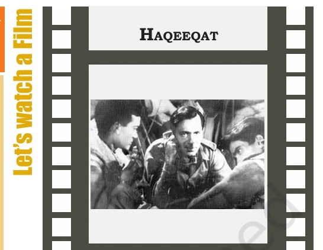
चित्रपट (फ़िल्म) विश्लेषण: हक़ीक़त (1964)
•
निर्देशन:
चेतन आनंद
•
मुख्य कलाकार:
धर्मेंद्र, बलराज साहनी, विजय आनंद, संजय खान, प्रिया राजवंश
•
मुख्य विषयवस्तु:
यह फिल्म
1962 के भारत-चीन युद्ध
की पृष्ठभूमि पर आधारित है। इसमें लद्दाख के विवादित क्षेत्र में तैनात भारतीय सैनिकों के मानवीय संघर्ष, वीरता और विपरीत परिस्थितियों में उनके अदम्य साहस को यथार्थवादी ढंग से दर्शाया गया है।
•
ऐतिहासिक व राजनीतिक महत्व :
यह फिल्म युद्ध की विभीषिका, सरकार की सैन्य तैयारियों में कमी के दर्द और उस समय के राष्ट्रीय मनोभावों (National Sentiment) को रेखांकित करती है। चेतन आनंद ने इस फिल्म को तत्कालीन प्रधानमंत्री जवाहरलाल नेहरू और लद्दाख के सैनिकों को समर्पित किया था। फिल्म का प्रसिद्ध देशभक्ति गीत
"कर चले हम फ़िदा जान-ओ-तन साथियों, अब तुम्हारे हवाले वतन साथियों"
(गीतकार: कैफ़ी आज़मी, संगीत: मदन मोहन) आज भी राष्ट्रीय गौरव और सैनिकों के बलिदान का अमर प्रतीक माना जाता है।
बोर्ड परीक्षा विशेष प्रश्नोत्तर (CBSE Board Q&A):
•
प्रश्न 1: 1962 के युद्ध पर आधारित किस प्रसिद्ध फिल्म का उल्लेख सुरक्षा चुनौतियों को समझने के लिए किया गया है?
•
उत्तर:
इस फिल्म का नाम
"हक़ीक़त" (1964)
है, जिसका निर्देशन
चेतन आनंद
ने किया था।
1962 के युद्ध ने भारत को यह सिखाया कि
'आदर्शवाद'
(Idealism) और
'यथार्थवाद'
(Realism) के बीच संतुलन जरूरी है। इसके बाद भारत ने अपनी सैन्य शक्ति को बढ़ाने पर ध्यान दिया।
भारत और पाकिस्तान का इतिहास ऐतिहासिक संघर्षों, सीमाओं के विवादों और शांति समझौतों का रहा है। 1947 के कश्मीर विभाजन से लेकर 1999 के कारगिल युद्ध तक दोनों देशों के बीच चार बड़े युद्ध हुए।
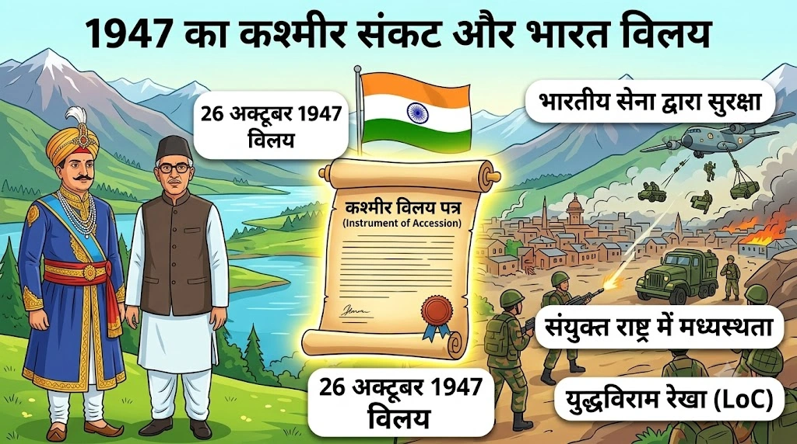
1947 कश्मीर विलय एवं सुरक्षा समझौता:
विवरण:
1947 में पाकिस्तानी कबाइलियों के आक्रमण के बाद महाराजा हरि सिंह द्वारा इंस्ट्रूमेंट ऑफ एक्सेसिबिलिटी पर हस्ताक्षर और भारतीय सेना का श्रीनगर हवाई अड्डे पर उतरकर कश्मीर की सुरक्षा सुनिश्चित करने का ऐतिहासिक दृश्य।
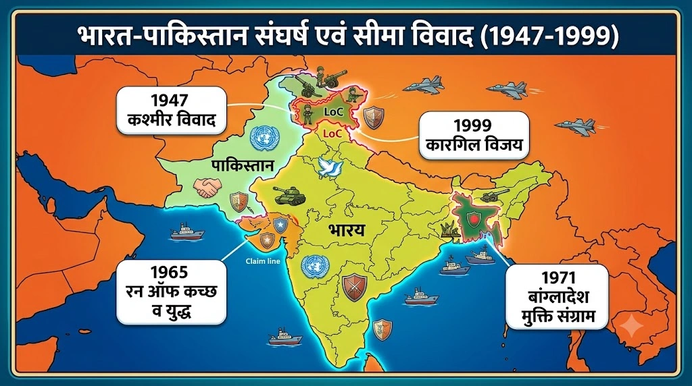
भारत-पाकिस्तान संघर्ष एवं सीमा विवाद (1947-1999):
विवरण:
यह मानचित्र विजुअल कार्ड भारत और पाकिस्तान के बीच चार प्रमुख ऐतिहासिक संघर्ष क्षेत्रों—1947 का कश्मीर विवाद व नियंत्रण रेखा (LoC), 1965 का रन ऑफ कच्छ, 1971 का बांग्लादेश मुक्ति संग्राम और 1999 का कारगिल युद्ध—को प्रदर्शित करता है।
1965 में पाकिस्तान ने गुजरात के
कच्छ के रण (Rann of Kutch)
और कश्मीर में हमला कर दिया।
-
नेतृत्व:
लाल बहादुर शास्त्री। उन्होंने भारतीय सेना को लाहौर तक बढ़ने का आदेश दिया।
-
ताशकंद समझौता (Tashkent Agreement, 1966):
सोवियत संघ की मध्यस्थता में यह समझौता हुआ। दुर्भाग्य से, इसी दौरान शास्त्रीजी का निधन हो गया।
ऐतिहासिक चित्र: 1965 भारत-पाकिस्तान युद्ध
विवरण:
1965 के भारत-पाकिस्तान युद्ध के दौरान एक पाकिस्तानी टैंक पर तिरंगा फहराते और शौर्य का प्रदर्शन करते हुए भारतीय सेना के वीर जवान।
बोर्ड परीक्षा विशेष प्रश्नोत्तर (CBSE Board Q&A):
•
प्रश्न 1: 1965 के युद्ध के समय भारत के प्रधानमंत्री कौन थे और उन्होंने कौन सा प्रसिद्ध नारा दिया था?
•
उत्तर:
इस युद्ध के समय भारत के प्रधानमंत्री
लाल बहादुर शास्त्री
थे। उन्होंने देश के जवानों और किसानों का मनोबल बढ़ाने के लिए प्रसिद्ध नारा
"जय जवान, जय किसान"
दिया था।
•
प्रश्न 2: 1965 के युद्ध का अंत किस समझौते से हुआ?
•
उत्तर:
इस युद्ध का अंत जनवरी 1966 में सोवियत संघ की मध्यस्थता से हुए
ताशकंद समझौते
(Tashkent Agreement) के द्वारा हुआ, जिस पर लाल बहादुर शास्त्री और पाकिस्तान के राष्ट्रपति अयूब खान ने हस्ताक्षर किए थे।
यह युद्ध भारत की सबसे बड़ी सैन्य और कूटनीतिक जीत थी। इसके दो मुख्य पहलू थे:
-
1. शरणार्थी संकट: पूर्वी पाकिस्तान (आज का बांग्लादेश) के दमन से परेशान होकर करोड़ों लोग भारत में घुस आए।
-
2. भारत की मदद: भारत ने 'मुक्ति वाहिनी' की मदद की और पाकिस्तान को 13 दिनों के युद्ध में हरा दिया।
-
3. ऐतिहासिक समर्पण: 93,000 पाकिस्तानी सैनिकों ने आत्मसमर्पण किया।
-
4. शिमला समझौता (Simla Agreement, 1972): इंदिरा गांधी और जुल्फिकार अली भुट्टो के बीच शांति के लिए यह समझौता हुआ।
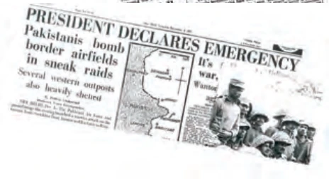
ऐतिहासिक समाचार पत्र: 1971 युद्ध एवं आपातकाल घोषणा
विवरण:
दिसंबर 1971 में पाकिस्तान द्वारा भारत पर हवाई हमला करने के बाद भारत में राष्ट्रीय आपातकाल लागू होने की घोषणा करने वाला समाचार पत्र।
बोर्ड परीक्षा विशेष प्रश्नोत्तर (CBSE Board Q&A):
•
प्रश्न 1: 1971 का युद्ध किस घटना से शुरू हुआ था?
•
उत्तर:
3 दिसंबर 1971 को पाकिस्तानी लड़ाकू विमानों ने भारत के कई हवाई अड्डों पर हमले किए। इसके जवाब में भारत ने पाकिस्तान के खिलाफ युद्ध की घोषणा कर दी और पूर्वी व पश्चिमी दोनों मोर्चों पर कार्रवाई शुरू की।
ऐतिहासिक चित्र: ढाका में पाकिस्तानी सेना का आत्मसमर्पण (16 दिसंबर 1971)
विवरण:
ढाका में पाकिस्तानी सेना के पूर्वी कमान के प्रमुख लेफ्टिनेंट जनरल ए. ए. के. नियाज़ी को भारतीय सेना के लेफ्टिनेंट जनरल जगजीत सिंह अरोड़ा के सामने आत्मसमर्पण के दस्तावेजों (Instrument of Surrender) पर हस्ताक्षर करते हुए।
बोर्ड परीक्षा विशेष प्रश्नोत्तर (CBSE Board Q&A):
•
प्रश्न 1: 1971 के युद्ध का परिणाम क्या हुआ?
•
उत्तर:
इस युद्ध में पाकिस्तान की करारी हार हुई और पूर्वी पाकिस्तान आज़ाद होकर
बांग्लादेश
के रूप में विश्व मानचित्र पर उभरा। 93,000 से अधिक पाकिस्तानी सैनिकों ने आत्मसमर्पण किया था, जो द्वितीय विश्व युद्ध के बाद सबसे बड़ा सैन्य आत्मसमर्पण था।
•
प्रश्न 2: शिमला समझौता (Simla Agreement) कब और किनके बीच हुआ था?
•
उत्तर:
यह समझौता
3 जुलाई 1972
को भारत की प्रधानमंत्री इंदिरा गांधी और पाकिस्तान के राष्ट्रपति जुल्फिकार अली भुट्टो के बीच हुआ था। इसके तहत कश्मीर मुद्दे को द्विपक्षीय बातचीत से सुलझाने और नियंत्रण रेखा (LoC) का सम्मान करने पर सहमति बनी।
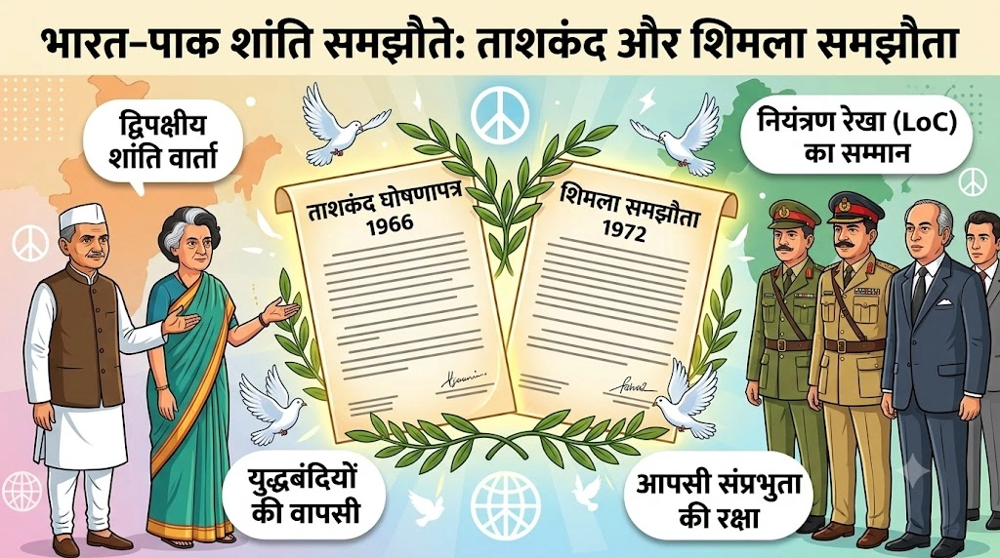
भारत-पाक शांति समझौते: ताशकंद घोषणापत्र एवं शिमला समझौता:
विवरण:
यह विजुअल कार्ड 1965 के युद्ध के बाद हुए 'ताशकंद समझौते (1966)' (लाल बहादुर शास्त्री और अयूब खान) तथा 1971 के युद्ध के बाद हुए 'शिमला समझौते (1972)' (इंदिरा गांधी और जुल्फिकार अली भुट्टो) के मुख्य शांति सिद्धांतों—द्विपक्षीय वार्ता, नियंत्रण रेखा का सम्मान, युद्धबंदियों की वापसी और आपसी संप्रभुता—को प्रदर्शित करता है।
मई-जुलाई 1999 में पाकिस्तानी सैनिकों ने कारगिल की ऊँची चोटियों पर कब्ज़ा कर लिया था। भारत ने
'ऑपरेशन विजय'
शुरू किया और अपनी चौकियों को वापस हासिल किया। यह युद्ध दिखा चुका था कि परमाणु हथियार होने के बावजूद युद्ध की संभावना खत्म नहीं होती।
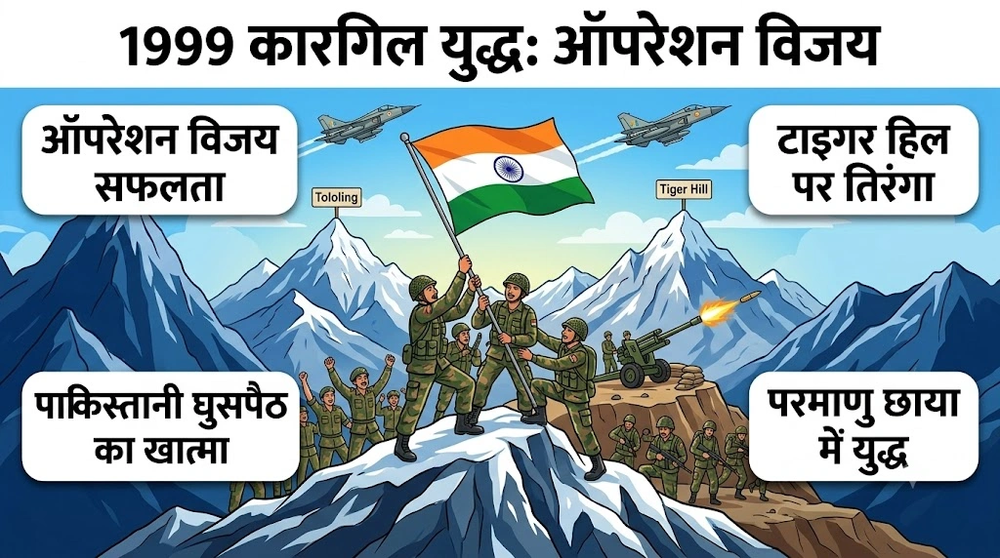
1999 कारगिल संघर्ष एवं ऑपरेशन विजय:
विवरण:
1999 में कारगिल की ऊंची चोटियों (टाइगर हिल, तोलोलिंग) पर पाकिस्तानी घुसपैठियों को खदेड़ने के लिए भारतीय सशस्त्र बलों द्वारा संचालित 'ऑपरेशन विजय' और अंतरराष्ट्रीय कूटनीतिक जीत।
भारत और पाकिस्तान के युद्धों ने दक्षिण एशिया की राजनीति को पूरी तरह बदल दिया। भारत ने हमेशा
'शांतिपूर्ण सह-अस्तित्व'
(Peaceful Co-existence) की कोशिश की, लेकिन अपनी संप्रभुता के साथ कभी समझौता नहीं किया।
भारत की परमाणु नीति का मुख्य आधार
'आत्मनिर्भरता'
और
'शांतिपूर्ण उपयोग'
(Peaceful Use) रहा है। भारत कभी भी परमाणु हथियारों की दौड़ में शामिल नहीं होना चाहता था, लेकिन सुरक्षा कारणों से उसे यह कदम उठाना पड़ा।
भारत ने 1940 के दशक के उत्तरार्ध में
होमी जे. भाभा
(Homi J. Bhabha) के नेतृत्व में अपना परमाणु कार्यक्रम शुरू किया। इसके मुख्य बिंदु निम्नलिखित हैं:
-
होमी जे. भाभा का योगदान:
भारत के परमाणु ऊर्जा कार्यक्रम के जनक डॉ. होमी जहांगीर भाभा थे, जिन्होंने भारत को परमाणु तकनीक में आत्मनिर्भर बनाने की नींव रखी।
-
पहला परीक्षण (Pokhran-I, 1974):
मई 1974 में भारत ने
'स्माइलिंग बुद्धा'
(Smiling Buddha) के गुप्त नाम से राजस्थान के पोखरण में अपना पहला शांतिपूर्ण परमाणु विस्फोट परीक्षण किया।
-
विश्व की प्रतिक्रिया और प्रतिबंध:
इस परीक्षण के बाद अमेरिका सहित पश्चिमी देशों ने भारत पर कड़े आर्थिक व तकनीकी प्रतिबंध लगा दिए।
-
शांतिपूर्ण उद्देश्यों का दावा:
भारत ने स्पष्ट रूप से घोषणा की कि उसका परमाणु कार्यक्रम केवल शांतिपूर्ण उद्देश्यों (जैसे बिजली उत्पादन) के लिए है।
-
शीत युद्ध कालीन विदेश नीति का हिस्सा:
यह परीक्षण दर्शाता था कि भारत बिना किसी बाहरी गुट के दबाव में आए तकनीकी और सैन्य रूप से मजबूत होने की संप्रभु क्षमता रखता है।
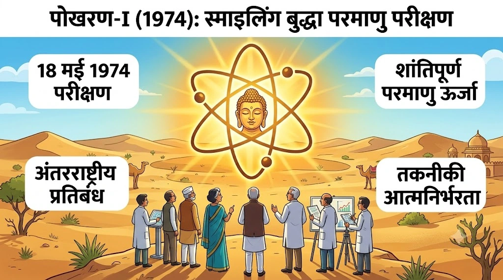
पोखरण-I (1974): स्माइलिंग बुद्धा परमाणु परीक्षण:
विवरण:
18 मई 1974 को राजस्थान के पोखरण में भारत का पहला शांतिपूर्ण भूमिगत परमाणु परीक्षण। इसके बाद पश्चिमी देशों द्वारा भारत पर कड़े तकनीकी और आर्थिक प्रतिबंध लगाए गए।
मई 1998 में प्रधानमंत्री अटल बिहारी वाजपेयी के कार्यकाल में भारत ने पोखरण में पांच और परमाणु परीक्षण (Operation Shakti) किए। इसके साथ ही भारत ने खुद को एक
'परमाणु हथियार संपन्न देश'
घोषित कर दिया। भारत के परमाणु सिद्धांत (Nuclear Doctrine) की मुख्य विशेषताएं निम्नलिखित हैं:
-
1. नो फर्स्ट यूज़ (No First Use - NFU):
भारत की सबसे प्रमुख नीति है कि वह किसी भी देश पर पहले परमाणु हमला नहीं करेगा। वह केवल आत्मरक्षा में जवाबी कार्रवाई करेगा।
-
2. गैर-परमाणु संपन्न देशों के खिलाफ उपयोग नहीं:
भारत उन देशों के खिलाफ कभी भी परमाणु हथियारों का उपयोग नहीं करेगा जिनके पास परमाणु हथियार नहीं हैं।
-
3. विश्वसनीय न्यूनतम प्रतिरोध (Credible Minimum Deterrence):
भारत उतने ही परमाणु हथियार विकसित करेगा जो शत्रुओं को डराने और भारत की रक्षा करने के लिए पर्याप्त हों।
-
4. असैन्य कूटनीतिक नियंत्रण (Civilian Control):
परमाणु हथियारों के इस्तेमाल की अनुमति केवल राजनीतिक नेतृत्व (प्रधानमंत्री और कैबिनेट) द्वारा गठित राष्ट्रीय सुरक्षा परिषद (Nuclear Command Authority) ही दे सकती है।
-
5. वैश्विक निरस्त्रीकरण का समर्थक:
भारत सार्वभौमिक और भेदभाव रहित वैश्विक परमाणु निरस्त्रीकरण का पक्षधर है, लेकिन वह NPT और CTBT जैसी भेदभावपूर्ण संधियों पर हस्ताक्षर नहीं करेगा।
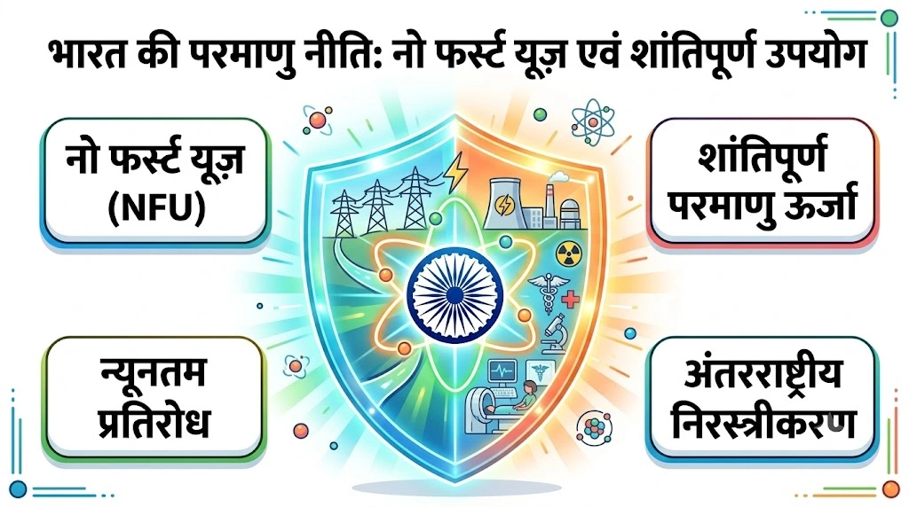
भारत की परमाणु नीति:
विवरण:
भारत की परमाणु नीति के दो मुख्य पहलुओं—'नो फर्स्ट यूज़' रक्षा ढाल और शांतिपूर्ण उद्देश्यों के लिए परमाणु ऊर्जा का उपयोग—को प्रदर्शित करता है।
भारत ने हमेशा इस बात पर जोर दिया है कि वह परमाणु ऊर्जा का उपयोग बिजली बनाने (Power Generation), चिकित्सा (Medicine) और कृषि (Agriculture) के क्षेत्र में करेगा। भारत का रिकॉर्ड पूरी दुनिया में बेदाग रहा है।
भारत की परमाणु नीति
'शक्ति'
और
'शांति'
का अद्भुत संगम है। हमने दिखाया है कि परमाणु शक्ति होने का मतलब युद्ध करना नहीं, बल्कि देश की सुरक्षा और सम्मान को सुरक्षित रखना है।
भारत की विदेश नीति हमेशा गतिशील रही है। शीत युद्ध के दौरान भारत ने दोनों महाशक्तियों के साथ अपने संबंधों को बहुत ही सावधानी से संतुलित किया।
भारत और सोवियत संघ की दोस्ती इतिहास की सबसे गहरी दोस्तियों में से एक रही है। इसके प्रमुख आयाम निम्नलिखित हैं:
-
1971 की मैत्री संधि (Friendship Treaty):
जब पाकिस्तान ने हमला किया, तब सोवियत संघ ने भारत का साथ दिया। यह संधि भारत की सुरक्षा के लिए एक मजबूत गारंटी थी।
-
आर्थिक मदद:
भिलाई, बोकारो और विशाखापत्तनम जैसे स्टील प्लांट और भारी उद्योगों को लगाने में सोवियत संघ ने भारत की बड़ी मदद की।
-
सैनिक साज-सामान:
आज भी भारत के पास मौजूद अधिकांश युद्धक विमान (जैसे सुखोई, मिग) और हथियार रूसी तकनीक के हैं और रूस हमारा सबसे भरोसेमंद रक्षा साझेदार है।
-
कश्मीर मुद्दे पर वीटो (Veto):
संयुक्त राष्ट्र संघ (UN) में जब भी पश्चिमी देशों ने कश्मीर मुद्दे पर भारत के खिलाफ प्रस्ताव लाने की कोशिश की, सोवियत संघ ने भारत के पक्ष में वीटो का उपयोग किया।
-
अंतरिक्ष व वैज्ञानिक सहयोग:
भारत के पहले उपग्रह 'आर्यभट्ट' के प्रक्षेपण और भारत के पहले अंतरिक्ष यात्री राकेश शर्मा की अंतरिक्ष यात्रा में सोवियत संघ ने प्रमुख भूमिका निभाई।
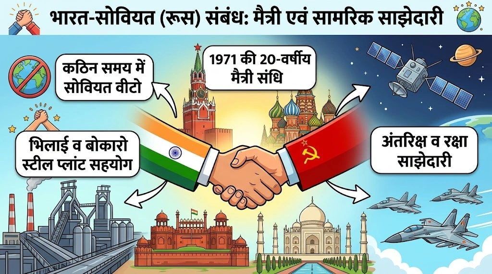
भारत-सोवियत (रूस) संबंध: मैत्री एवं सामरिक साझेदारी:
विवरण:
यह विजुअल कार्ड 1971 की 20-वर्षीय शांति व मैत्री संधि, कठिन वैश्विक समय में सोवियत वीटो का समर्थन, भिलाई व बोकारो स्टील प्लांट सहयोग, तथा अंतरिक्ष एवं रक्षा सामरिक साझेदारी को प्रदर्शित करता है।
शीत युद्ध के समय भारत और अमेरिका के बीच दूरियाँ थीं, लेकिन 1991 के बाद यह तस्वीर पूरी तरह बदल गई है। इसके मुख्य आयाम निम्नलिखित हैं:
-
1. सॉफ्टवेयर और आईटी निर्यात:
भारत के कुल सॉफ्टवेयर निर्यात का लगभग 65% हिस्सा अमेरिकी बाजार में जाता है।
-
2. प्रवासी भारतीय (Indian Diaspora):
अमेरिका में रहने वाले लगभग 40 लाख कुशल और समृद्ध भारतीय आज वहां की राजनीति, अर्थव्यवस्था और सिलिकॉन वैली को प्रभावित करते हैं।
-
3. नागरिक परमाणु समझौता (Civil Nuclear Deal, 2008):
डॉ. मनमोहन सिंह और अमेरिकी राष्ट्रपति जॉर्ज बुश के समय हुआ ऐतिहासिक 123 समझौता, जिसने भारत को वैश्विक न्यूक्लियर क्लब में स्थान दिलाया।
-
4. कूटनीतिक सामरिक साझेदारी:
आज भारत और अमेरिका क्वाड (QUAD) के जरिए मिलकर हिंद-प्रशांत (Indo-Pacific) क्षेत्र में शांति और सुरक्षा स्थापित करने के लिए काम कर रहे हैं।
-
5. रक्षा और सैन्य सहयोग:
भारत और अमेरिका के बीच आज मालाबार (Malabar) और युद्ध अभ्यास जैसे बड़े संयुक्त सैन्य अभ्यास आयोजित होते हैं।
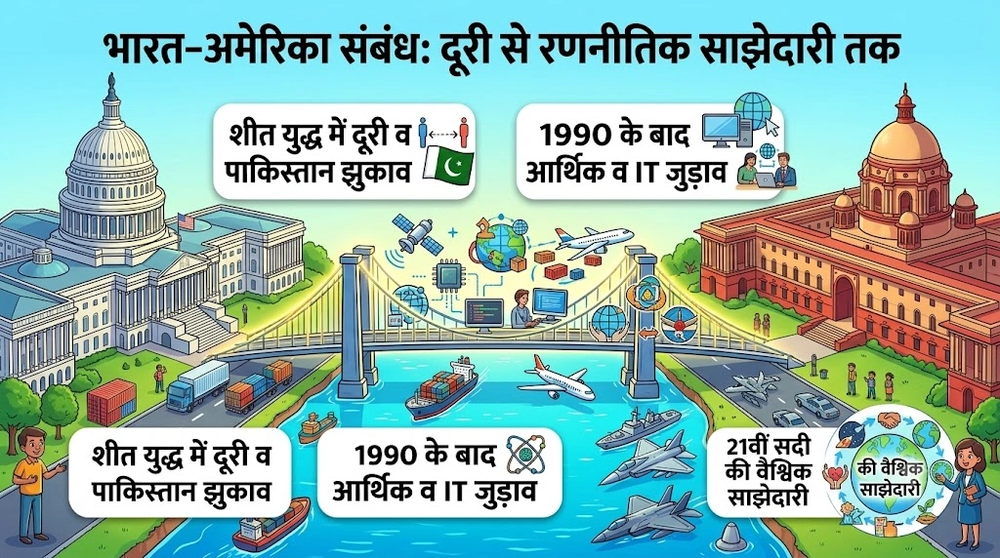
भारत-अमेरिका संबंध: शीत युद्ध की दूरी से रणनीतिक साझेदारी तक:
विवरण:
यह विजुअल कार्ड शीत युद्ध काल में अमेरिकी दूरी व पाकिस्तान की ओर झुकाव से लेकर 1990 के बाद के आर्थिक व IT जुड़ाव, 2008 के असैन्य परमाणु समझौते तथा 21वीं सदी की क्वाड (QUAD) व रक्षा वैश्विक साझेदारी को प्रदर्शित करता है।
1977 जनता पार्टी सरकार की 'सच्ची गुटनिरपेक्षता' (Genuine Non-Alignment):
1977 में जनता पार्टी की सरकार बनने पर मोरारजी देसाई ने घोषणा की कि भारत 'सच्ची गुटनिरपेक्षता' का पालन करेगा, ताकि भारत का झुकाव केवल सोवियत संघ की ओर न दिखे और अमेरिका व पश्चिमी देशों के साथ भी संतुलित संबंध स्थापित हो सकें।
1991 के बाद बहु-गठबंधन (Multi-Alignment):
1991 में सोवियत संघ के विघटन के बाद, भारत ने अपनी विदेश नीति को
'बहुध्रुवीय'
(Multipolar) बनाया। आज भारत न केवल अमेरिका और रूस, बल्कि इजराइल, फ्रांस, खाड़ी देशों और आसियान (ASEAN) के साथ भी मजबूत कूटनीतिक संबंध रखता है।
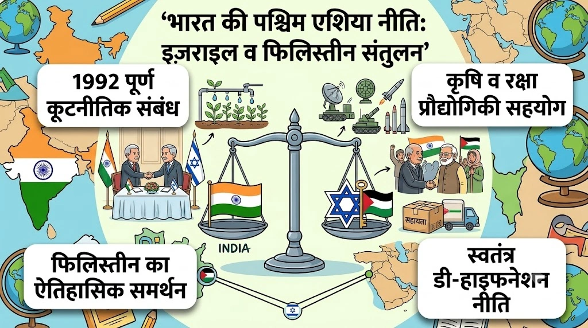
पश्चिम एशिया नीति: इज़राइल-फ़िलिस्तीन संतुलन:
विवरण:
भारत की बहु-आयामी पश्चिम एशिया रणनीति: फ़िलिस्तीन के लिए ऐतिहासिक नैतिक समर्थन के साथ-साथ इज़राइल के साथ रक्षा/प्रौद्योगिकी रणनीतिक साझेदारी और अरब खाड़ी देशों के साथ आर्थिक संबंधों का संतुलन (De-hyphenation Policy)।
21वीं सदी की नई पहलें:
भारत आज
ग्लोबल साउथ (Global South)
की आवाज बनकर उभरा है। इसके अलावा G20 की अध्यक्षता, ब्रिक्स (BRICS), शंघाई सहयोग संगठन (SCO), क्वाड (QUAD) तथा अंतरराष्ट्रीय सौर गठबंधन (ISA) जैसे वैश्विक मंचों का सफल नेतृत्व कर रहा है।
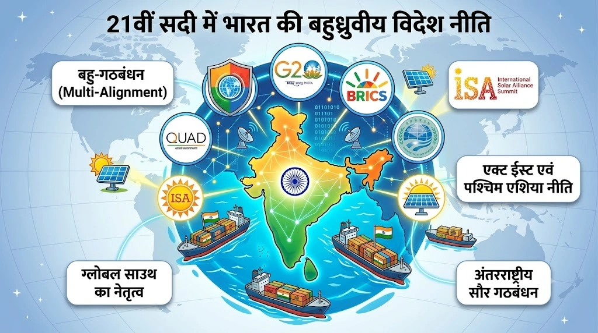
21वीं सदी में भारत की बहुध्रुवीय विदेश नीति:
विवरण:
यह विजुअल कार्ड बहु-गठबंधन (Multi-Alignment), ग्लोबल साउथ का वैश्विक नेतृत्व, एक्ट ईस्ट व पश्चिम एशिया नीति, तथा G20, BRICS, QUAD, SCO एवं अंतरराष्ट्रीय सौर गठबंधन (ISA) में भारत की अग्रणी भूमिका को प्रदर्शित करता है।
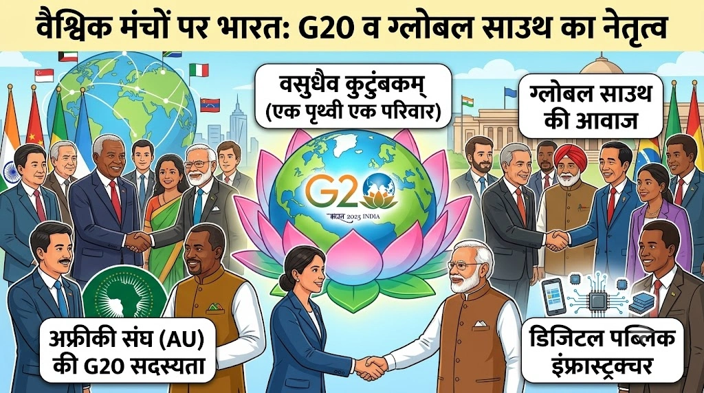
21वीं सदी में भारत: BRICS, G20 एवं ग्लोबल साउथ नेतृत्व:
विवरण:
21वीं सदी के बहुध्रुवीय विश्व में भारत का बढ़ता कद: G20 नई दिल्ली शिखर सम्मेलन की अध्यक्षता, BRICS मंच पर प्रभाव और विकासशील देशों (ग्लोबल साउथ) की सशक्त आवाज के रूप में उभरना।
भारत की विदेश नीति ने
'गुटनिरपेक्षता'
से
'सच्ची गुटनिरपेक्षता'
और आज
'बहु-गठबंधन'
(Multi-alignment) तक का लंबा व गौरवशाली सफर तय किया है। आज भारत एक ऐसी वैश्विक महाशक्ति है जो शांति, सुरक्षा और समृद्धि के साथ पूरी दुनिया का नेतृत्व कर रही है।